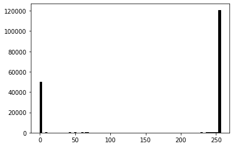
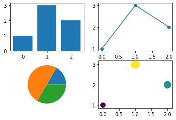
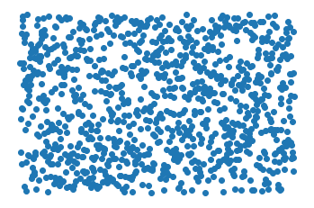
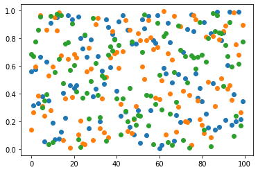
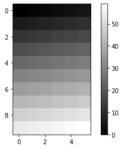
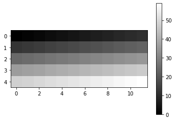

Diagramme en secteurs¶
import matplotlib.pyplot as plt
import numpy as np
x = range(3)
y = [1, 2, 3]
a = list('abc')
plt.pie(y, labels=a, shadow=True);
plt.plot(y)
plt.step(x, y)
[<matplotlib.lines.Line2D at 0x7fc0d6320ed0>]
Diagramme en escalier¶
plt.step(x, y, 'o-');

x = np.arange(3)
y = np.array([1, 3, 2])
plt.subplot(221)
plt.bar(x, y)
plt.subplot(222)
plt.plot(x, y, 'o-')
plt.subplot(223)
plt.pie(y)
plt.subplot(224)
plt.scatter(x, y, s=y*100, c=y);

def add1(a, b):
if a == '0':
return b
elif b == '0':
return '1'
else:
return '10'
add1('1', '1')
'10'
a = 23
b = 45
c = a^b
C = a&b<<1
print(f'a = {a:08b}')
print(f'b = {b:08b}')
print(f'c = {c:08b}')
print(f'C = {C:08b}')
a = 00010111
b = 00101101
c = 00111010
C = 00010010
n = 1000
y = np.random.random(n)
plt.plot(y, 'o')
plt.axis('off');

n = 100
y = np.random.random([n, 3])
plt.plot(y, 'o');

Valeurs uniques¶
y = np.random.randint(1, 100, size=20)
y
array([70, 90, 28, 27, 70, 51, 64, 77, 77, 82, 33, 55, 73, 55, 77, 32, 58,
89, 39, 63])
set(y)
{27, 28, 32, 33, 39, 51, 55, 58, 63, 64, 70, 73, 77, 82, 89, 90}
np.unique(y)
array([27, 28, 32, 33, 39, 51, 55, 58, 63, 64, 70, 73, 77, 82, 89, 90])
np.unique(y, return_index=True)
(array([27, 28, 32, 33, 39, 51, 55, 58, 63, 64, 70, 73, 77, 82, 89, 90]),
array([ 3, 2, 15, 10, 18, 5, 11, 16, 19, 6, 0, 12, 7, 9, 17, 1]))
np.unique(y, return_counts=True)
(array([27, 28, 32, 33, 39, 51, 55, 58, 63, 64, 70, 73, 77, 82, 89, 90]),
array([1, 1, 1, 1, 1, 1, 2, 1, 1, 1, 2, 1, 3, 1, 1, 1]))
y = np.arange(60)
plt.imshow(y.reshape(10, 6), cmap='gray')
plt.colorbar();

plt.imshow(y.reshape(5, 12), cmap='gray')
plt.colorbar();

plt.imshow(y.reshape(10, 6).T, cmap='gray')
plt.colorbar();

a = np.arange(10)
a
array([0, 1, 2, 3, 4, 5, 6, 7, 8, 9])
np.flip(a)
array([9, 8, 7, 6, 5, 4, 3, 2, 1, 0])
help(print)
Help on built-in function print in module builtins:
print(...)
print(value, ..., sep=' ', end='\n', file=sys.stdout, flush=False)
Prints the values to a stream, or to sys.stdout by default.
Optional keyword arguments:
file: a file-like object (stream); defaults to the current sys.stdout.
sep: string inserted between values, default a space.
end: string appended after the last value, default a newline.
flush: whether to forcibly flush the stream.
a = 'hello'
a?
Type: str
String form: hello
Length: 5
Docstring:
str(object='') -> str
str(bytes_or_buffer[, encoding[, errors]]) -> str
Create a new string object from the given object. If encoding or
errors is specified, then the object must expose a data buffer
that will be decoded using the given encoding and error handler.
Otherwise, returns the result of object.__str__() (if defined)
or repr(object).
encoding defaults to sys.getdefaultencoding().
errors defaults to 'strict'.
x = 1
x?
Type: int
String form: 1
Docstring:
int([x]) -> integer
int(x, base=10) -> integer
Convert a number or string to an integer, or return 0 if no arguments
are given. If x is a number, return x.__int__(). For floating point
numbers, this truncates towards zero.
If x is not a number or if base is given, then x must be a string,
bytes, or bytearray instance representing an integer literal in the
given base. The literal can be preceded by '+' or '-' and be surrounded
by whitespace. The base defaults to 10. Valid bases are 0 and 2-36.
Base 0 means to interpret the base from the string as an integer literal.
>>> int('0b100', base=0)
4
int('1111111', base=2)
127
Info pour une fonction¶
Nous pouvons ajouter un docstring dans la définition d’une fonction.
def add2(x):
"""adds 2 to a number"""
return x + 2
add2?
Signature: add2(x)
Docstring: adds 2 to a number
File: ~/GitHub/edunum/doc/plot/<ipython-input-107-52b82a4ce8ea>
Type: function
add2??
Signature: add2(x)
Source:
def add2(x):
"""adds 2 to a number"""
return x + 2
File: ~/GitHub/edunum/doc/plot/<ipython-input-107-52b82a4ce8ea>
Type: function
len?
Signature: len(obj, /)
Docstring: Return the number of items in a container.
Type: builtin_function_or_method
Enregistrer un tableau¶
np.save('data.npy', y)
ll data*
-rw-r--r-- 1 raphael staff 608 Jan 18 20:41 data.npy
x = np.load('data.npy')
x is y
False
x == y
array([ True, True, True, True, True, True, True, True, True,
True, True, True, True, True, True, True, True, True,
True, True, True, True, True, True, True, True, True,
True, True, True, True, True, True, True, True, True,
True, True, True, True, True, True, True, True, True,
True, True, True, True, True, True, True, True, True,
True, True, True, True, True, True])
a = np.arange(5, dtype='int8')
np.savetxt('data.txt', a)
cat data.txt
0.000000000000000000e+00
1.000000000000000000e+00
2.000000000000000000e+00
3.000000000000000000e+00
4.000000000000000000e+00
np.savetxt('data.csv', a)
cat data.csv
0.000000000000000000e+00
1.000000000000000000e+00
2.000000000000000000e+00
3.000000000000000000e+00
4.000000000000000000e+00
ll data*
-rw-r--r-- 1 raphael staff 125 Jan 18 20:47 data.csv
-rw-r--r-- 1 raphael staff 608 Jan 18 20:42 data.npy
-rw-r--r-- 1 raphael staff 125 Jan 18 20:48 data.txt
b = np.loadtxt('data.csv')
b
array([0., 1., 2., 3., 4.])
np.savetxt('data.csv', a, newline=',', fmt='%d')
cat data.csv
0,1,2,3,4,
d = 'hello'
c is d
True
a = np.array([0, 0, 0], dtype=np.bool_)
a.itemsize
2
a = np.array([0, 0, 0], dtype=np.int16)
a.itemsize
2
a = np.array(1, dtype=int)
a.dtype
dtype('int64')
a.dtype
dtype('float64')
np.iinfo(int)
iinfo(min=-9223372036854775808, max=9223372036854775807, dtype=int64)